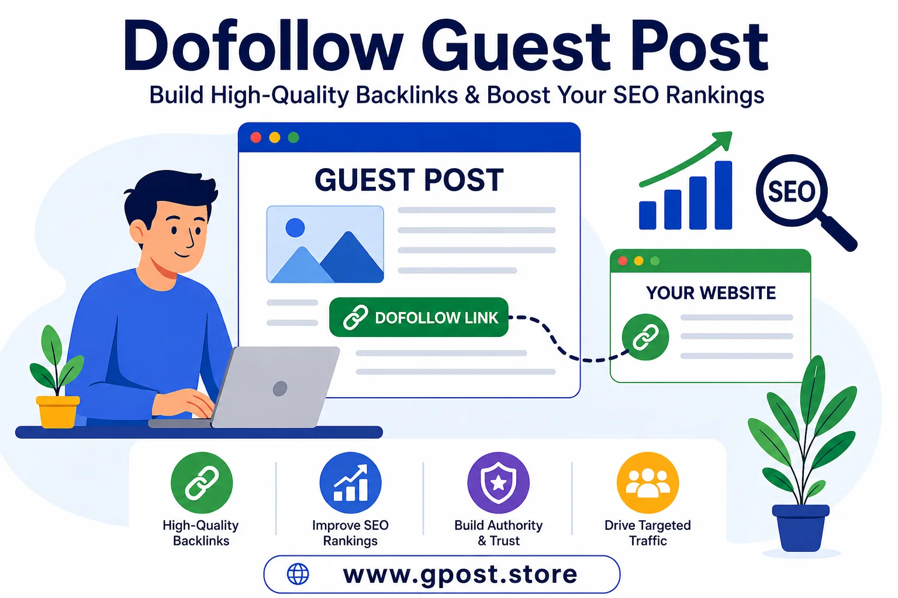

Dofollow Guest Post Guide: For Building Powerful SEO Backlinks
Dofollow Guest Post Guide strong> explains how to improve your website rankings using powerful backlinks when your content alone is not enough to get results. Many websites struggle to rank even after publishing quality content, and the main reason is often a lack of strong, authoritative backlinks. This is where dofollow guest posting becomes a game-changing SEO strategy.
Guest posting is one of the most reliable SEO strategies, but not all backlinks are equal. If you want real ranking power, you need guest post dofollow links. These links pass authority (link juice) and directly impact your search engine rankings.
In this complete guide, you'll learn what a dofollow guest post is, why it matters, how to find dofollow guest posting sites, and how to build high-quality backlinks—even if you're a beginner.

Dofollow guest post strategy to build high-quality SEO backlinks
What is a Dofollow Guest Post?
A dofollow guest post is when you publish an article on another website and receive a backlink that passes SEO value to your site. These links help search engines understand your website's authority and improve your rankings.
Quick Answer (Featured Snippet)
A dofollow guest post is a blog article published on another website that includes a dofollow backlink pointing to your site. This type of link passes authority and helps improve search engine rankings.
Unlike nofollow links, dofollow links directly contribute to your SEO growth. That's why they are highly valuable in link building strategies, often combined with guest post link building techniques.
Why Guest Posting is Important for SEO
Guest posting is not just about backlinks—it's about building authority, trust, and visibility in your niche.
- Boost Rankings: Dofollow backlinks are a major Google ranking factor
- Increase Authority: Links from trusted websites build credibility
- Drive Traffic: You get referral visitors from relevant audiences
- Brand Exposure: Your name reaches a wider audience
When done right, guest posting can transform your website's SEO performance. For a data-backed perspective, reviewing a real Blogger Outreach Case Study can show you exactly what kind of results are achievable.
Types of Guest Posting Sites
1. Free Guest Posting Sites
These are platforms where you can publish content without paying. Finding a free website for dofollow guest post can be challenging, but they do exist.
- Good for beginners
- Lower authority in most cases
- Requires more effort to find quality sites
You can start with free guest posting sites without registration to practice outreach and build your portfolio before investing in paid placements.
2. Paid Guest Posting Sites
These are high-authority websites that charge a fee for publishing content.
- Faster results
- Higher domain authority
- Better link quality
3. Niche-Specific Blogs
These are the best option for SEO. They are highly relevant to your industry.
- Strong topical relevance
- Better rankings impact
- Targeted audience
How to Find Dofollow Guest Posting Sites
Finding the right websites is the foundation of successful guest posting.
Google Search Operators
- "write for us" + your niche
- "guest post" + keyword
- "submit article" + niche
Competitor Backlink Analysis
Analyze your competitors using SEO tools. Look for websites linking to them and reach out to those sites. You can also review a real blogger outreach case study to understand practical results.
Manual Outreach
Find blogs in your niche and contact website owners directly with a content pitch. Learning how to find niche blogs for guest posting in 2026 will help you target the most relevant and high-value placements.
Step-by-Step Dofollow Guest Posting Strategy
1. Find Relevant Websites
Focus on sites with strong authority and relevance to your niche.
2. Send Outreach Email
Write a short, personalized email. Offer value and suggest topic ideas using a structured guest posting outreach strategy.
3. Write High-Quality Content
Your content must be unique, helpful, and engaging. Avoid fluff and focus on real value. Investing in proper Content Writing for Guest Posts ensures your articles meet editorial standards and get published on quality sites.
4. Get Your Dofollow Backlink
Make sure your link is placed naturally within the content using proper anchor text.
Common Mistakes to Avoid
- Using spammy or low-quality websites
- Buying cheap backlinks
- Over-optimizing anchor text
- Ignoring niche relevance
- Publishing duplicate or low-quality content
Avoid these mistakes if you want long-term SEO success. Understanding Guest Posting Mistakes That Hurt SEO Rankings gives you a clear picture of what to watch out for at every stage of your campaign.
Pro Tips to Rank Faster
- Focus on relevance: A niche-relevant site is better than a high DA irrelevant site
- Diversify anchor text: Keep it natural and varied
- Mix strategies: Combine guest posting with niche edits
- Build internal links: Strengthen your website structure
Is Guest Posting Still Worth It in 2026?
Yes, absolutely. Guest posting is still one of the most effective SEO strategies in 2026.
Search engines still rely heavily on backlinks to determine authority. However, quality matters more than ever. Spammy links can hurt your rankings.
Focus on high-quality guest post dofollow links from trusted websites, and you'll see consistent growth. Working with the Best Guest Posting Service can help you secure authoritative placements without spending weeks on manual outreach.
When to Avoid Guest Posting
- If the website has poor-quality content
- If it sells links excessively
- If it is not relevant to your niche
- If the site has no real traffic
Always prioritize quality over quantity.
Safety Guidelines (Important)
- Follow Google's guidelines
- Avoid spammy backlink networks
- Do not use automated link building tools
- Focus on real websites with genuine traffic
It is also worth understanding Is Guest Posting White Hat or Grey Hat SEO? so you can make fully informed decisions that align with Google's evolving guidelines.
FAQs
What is a dofollow guest post in SEO?
A dofollow guest post is content published on another website with a backlink that passes SEO authority, improving rankings, domain strength, and organic visibility in search engines.
What is dofollow guest posting and how does it work?
Dofollow guest posting involves writing for external blogs and earning backlinks that pass link equity, helping search engines increase authority and improve keyword rankings effectively.
What mistakes should I avoid in dofollow guest posting?
Avoid spammy sites, irrelevant niches, over-optimized anchors, and low-quality content. These mistakes can reduce SEO impact and harm long-term ranking performance and domain trust.
Dofollow vs nofollow guest posts: which is better for SEO?
Dofollow guest posts are better for SEO because they pass link juice and improve rankings, while nofollow links mainly drive traffic without strong authority signals.
How can I do a dofollow guest post step by step?
Find niche sites, send outreach emails, write high-quality content, and place natural dofollow backlinks. Focus on authority websites for stronger SEO results and ranking improvements.
What is the best SEO strategy for dofollow guest posting?
Use niche-relevant sites, diverse anchor text, quality content, and internal linking. This builds topical authority and improves long-term organic visibility and search rankings effectively.
How do dofollow guest posts help improve Google rankings?
They pass authority signals from trusted websites, increase domain trust, improve crawlability, and strengthen keyword relevance, helping websites rank higher in Google search results.
What tools can help find dofollow guest posting sites?
Use SEO tools like Ahrefs, SEMrush, Google search operators, and competitor backlink analysis to discover high-authority dofollow guest posting opportunities in your niche.
How do dofollow guest posts increase website authority and traffic?
They build authority through backlinks from trusted sites, improve domain rating, generate referral traffic, and boost organic visibility for faster SEO growth and scaling.
Are dofollow guest posts still effective in 2026 SEO?
Yes, they remain effective in 2026. Google values quality backlinks, but relevance, authority, and natural link building are more important than link quantity.
Conclusion
A dofollow guest post is one of the most powerful tools in SEO. It helps you build authority, improve rankings, and drive targeted traffic.
The key is to focus on quality, relevance, and natural link building. Avoid shortcuts and spammy tactics. Instead, build relationships, create valuable content, and target the right websites.
If you combine smart outreach with high-quality content, dofollow guest posting sites can become your biggest SEO advantage.